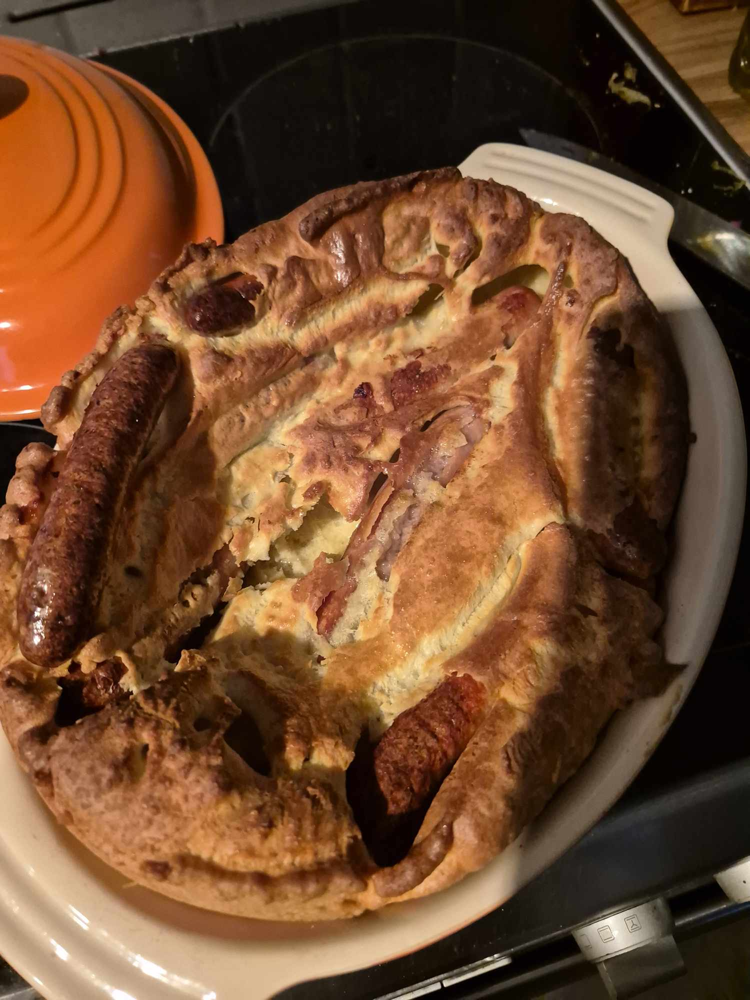

Toad in the hole

Description
A delicious and puffy yorkshire pudding filled with sausages of your choice, i find best served with gravy and mash potatoes.
Ingredients
- 200g all purpose flour
- 200ml of milk
- 3 large eggs
- 6 sausages
- salt and pepper
- oil
Steps
- Mix the eggs milk and flour in a bowl until a batter forms, leave this to rest for 10 mins
- at the same time put the sausages into a baking pan with oil on the bottom and place it in the oven at 200 for 10 mins
- once the sausages have cooked for 10 mins and the oil is hot pour th batter into the pan and let cook back in the oven for roughly 25 mins, until golden on top
- remove from oven and serve with whatever side takes your fancy and ofcourse heaps of gravy!